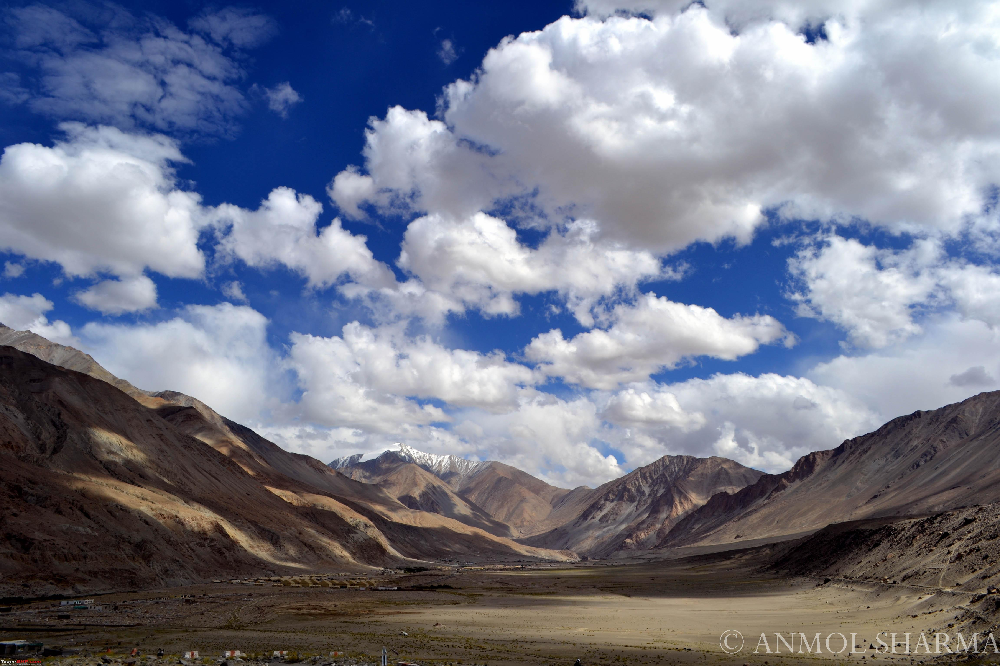

Various names have been given to Leh (Ladakh) in the past. Some called it Maryul, or low land, while others called it Kha- chumpa. It was called Kia-Chha by Fa-Hein and Ma-Lo-Pho by Hiuen Tsang. The Brokpas from Dadarstan, who inhabited the lower regions of the Indus Valley, colloquially known as Sham, are claimed to have been the earliest immigrants to this land. The Mons, an Aryan type who initially established in Gya and spread to Rong, Shayok, Sakti Tangtse, and Durbuk, the territory spanning from Martselang to Khaltsi, were another wave of immigrants from Karja (Kulu).
The Kargil War,in Ladakh, also known as the Kargil conflict, was an armed battle between India and Pakistan that took place in Jammu and Kashmir's Kargil area and elsewhere along the Line of Control from May to July 1999. (LoC). The battle is also known in India as Operation Vijay because it was the name of the Indian military operation that cleared out the Kargil area. During the war, the Indian Air Force worked alongside Indian Army ground troops to clear Pakistan Army regular and irregular troops from vacated Indian positions along the Line of Control. Operation Safed Sagar was the codename for this particular mission.
And many more...